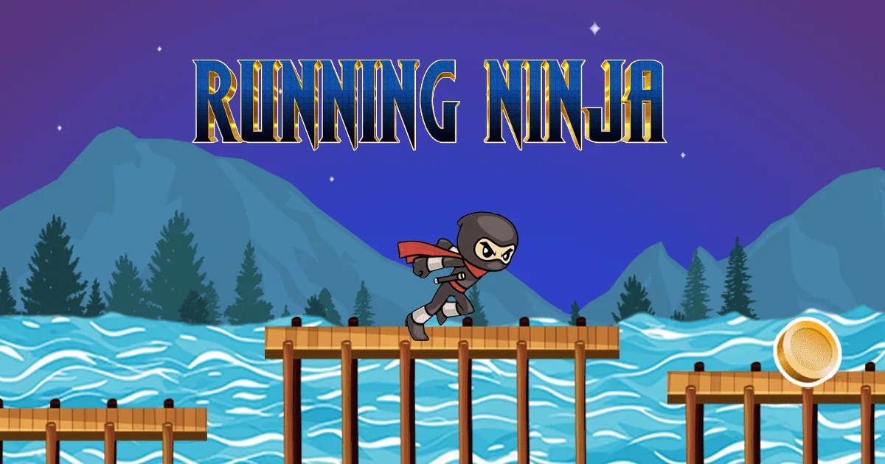

Running Ninja is an exhilarating and fast-paced mobile game that thrusts players into the role of a ninja, challenging them to traverse through various levels and obstacles with speed and precision.
In Running Ninja, players must utilize their ninja abilities to maneuver through levels fraught with deadly traps, adversaries, and hurdles. The game offers intuitive touch controls, empowering players to effortlessly leap, slide, and strike their way through each level.
With a plethora of power-ups and enhancements at their disposal, players can augment their ninja's capabilities to tackle increasingly daunting challenges. As players advance through the game, the levels ramp up in difficulty, putting their reflexes and strategic prowess to the test.
Running Ninja boasts stunning graphics and vibrant aesthetics, immersing players in a captivating gameplay environment. Featuring rapid-paced action and addictive mechanics, players can delve into the game for minutes or lose themselves for hours on end.
Whether you're a platformer enthusiast or simply seeking an engaging and challenging mobile gaming experience, Running Ninja promises boundless entertainment. With its user-friendly controls, thrilling gameplay, and formidable obstacles, it's a game that will keep you hooked for hours.